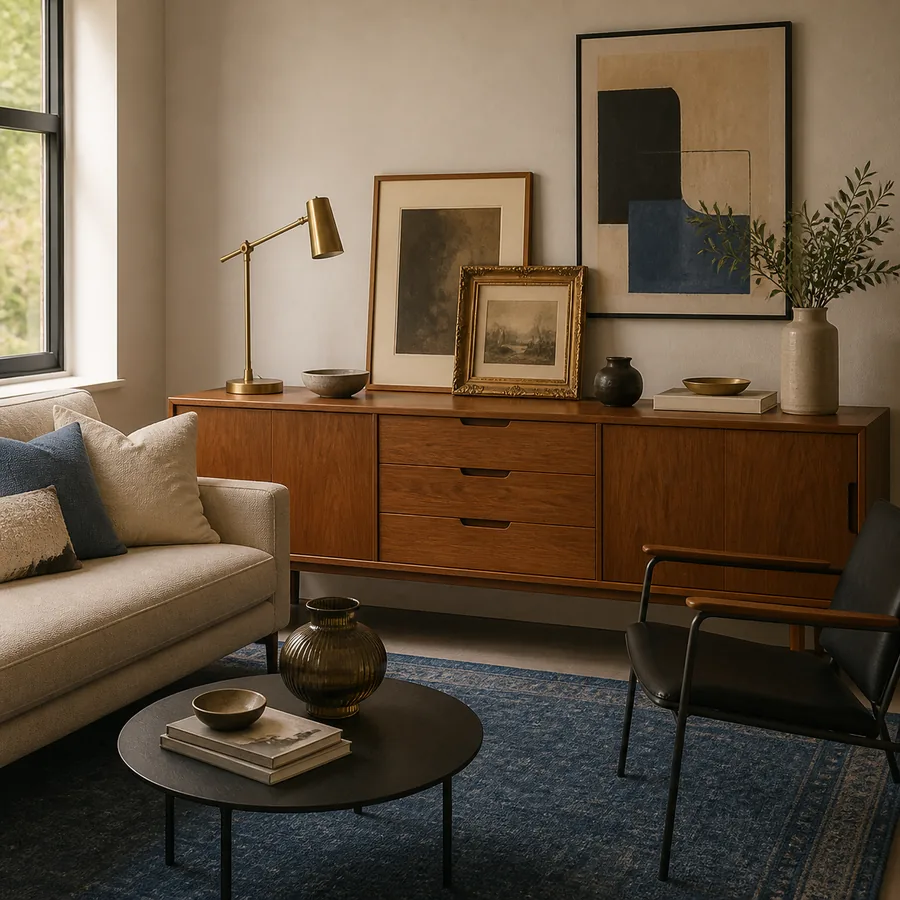

Style guide
Vintage Modern Mix
Clean modern rooms softened with vintage lighting, art, frames, and patina.

How this style works
Vintage Modern Mix works best when the room has one clear anchor and a few repeated materials. Start with warm wood, linen, black metal, then add smaller accents only after the room direction is clear.
Best materials
- warm wood
- linen
- black metal
- aged frames
- ceramic catchalls
Common mistake
Do not make every item vintage. The room works when old pieces have visual space around them.
What to shop first
- One vintage lighting piece with visible character.
- One framed artwork or mirror to set the mood.
- Two small accessories that repeat the room palette.
- One texture piece: velvet, linen, wood, glass, brass, or ceramic.